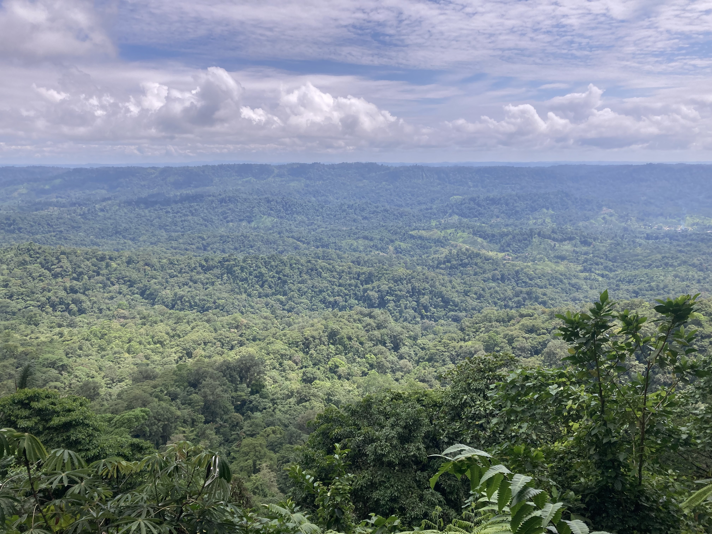
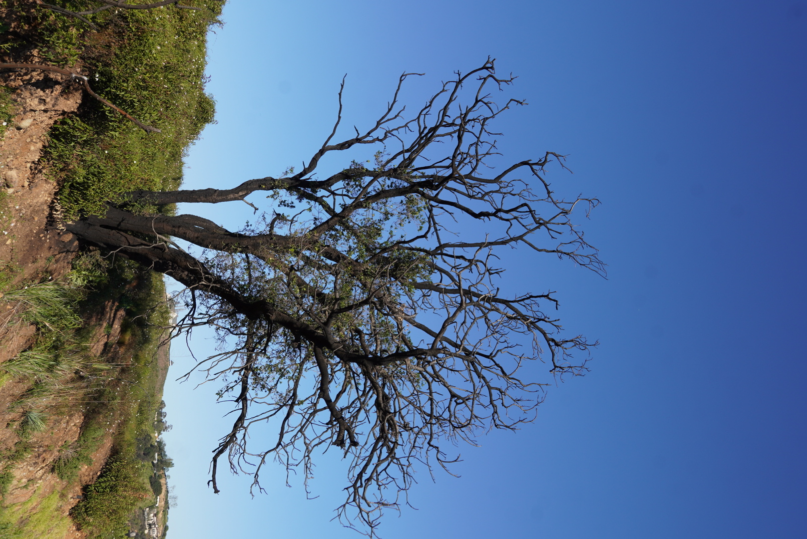

Research
I study how ecosystems respond to and recover from disturbances. I use a variety of tools ranging from theoretical models to statistics and empirical data analysis. My two main research projects deal with the recovery of tropical forests after deforestation and the resilience of forests across the western United States to wildfires.

Within the framework of the Reassembly research unit I study how rainforests recover from deforestation. The study region is located in the Chocó rainforest in Northwestern Ecuador. I am mostly involved in synthesis projects, in which recovery trajectories of diversity, composition and networks of various groups of species are calculated based on empirical observations. For this, I develop theoretical frameworks and use statistical analysis to rigorously assess resilience across a diverse range of taxa.

Together with Nicholas Hendershot from The Nature Conservancy and Chuliang Song from UCLA I assess how different forest management strategies affect the resilience of forests across the western United States to wildfires. We use data from the Forest Inventory and Analysis (FIA) database and a variety of statistical tools to answer this question across broad spatial scales.